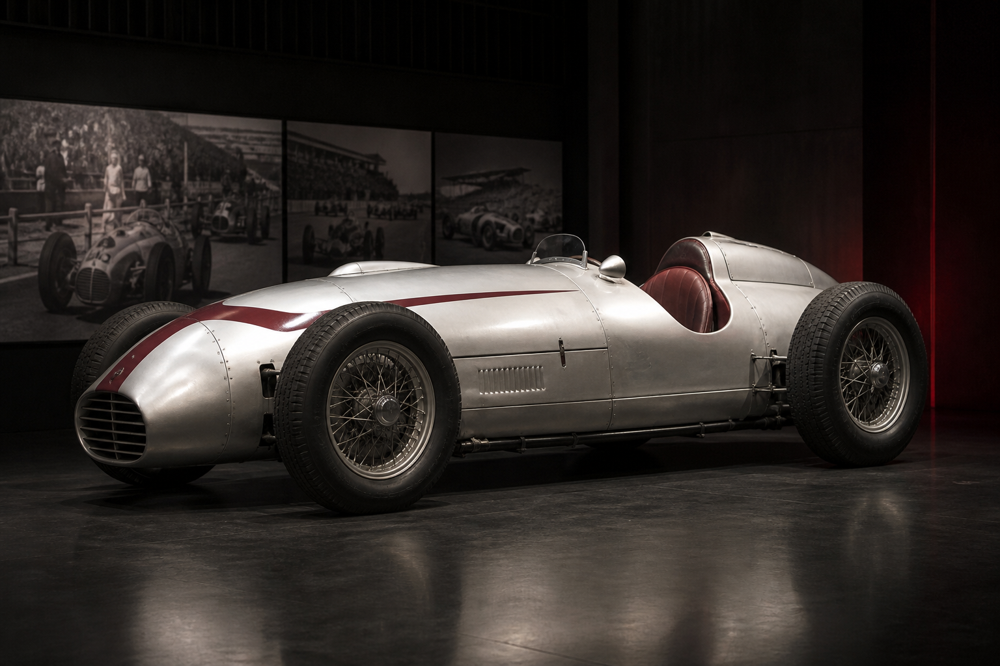

01Коллекция / 1950-е1950-е
Рождение чемпионата
Смелость раньше аэродинамики
13 мая 1950 года Сильверстоун принял первый этап нового чемпионата мира. Переднемоторные машины, узкие шины и почти полное отсутствие защиты превращали каждую гонку в испытание характера.
24 победы Фанхио за декаду